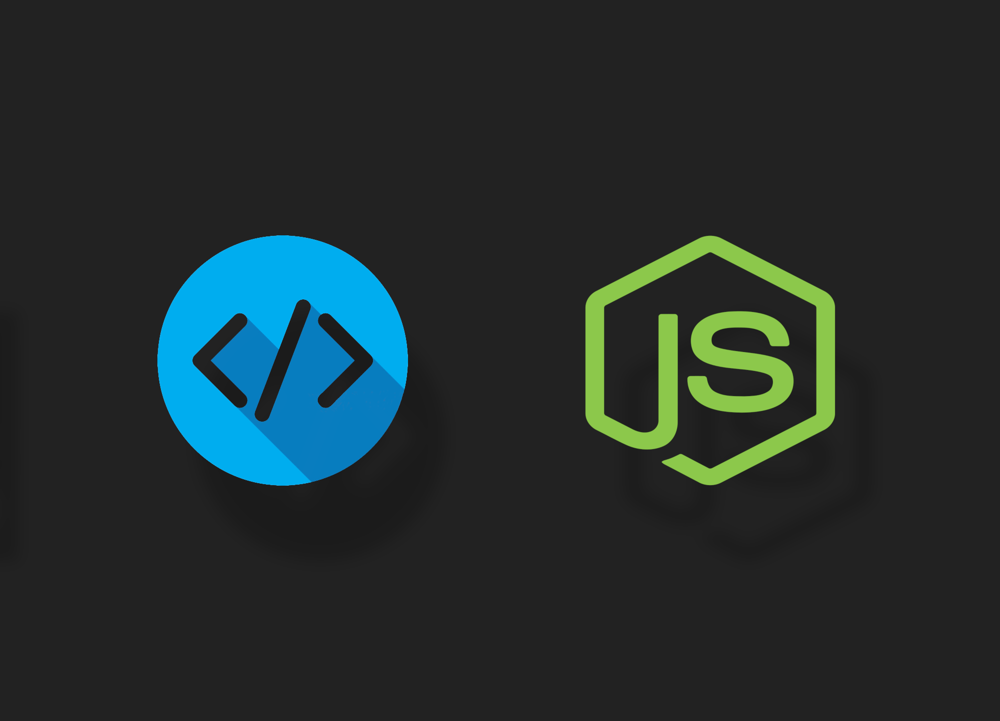

Throughout my semester taking software engineering (ICS 314) at the University of Hawaii at Manoa, much of our time was spent designing and creating web applications. However, through the development of web applications, we learned various fundamental software engineering skills. Some of these skills include agile project management, functional programming, and open-source software development. These skills are important because they improve the efficiency of software development. This is done by encouraging collaboration and innovation to meet the needs of users and software developers in the creation and design of new projects and ideas.
For our final project, we had to develop a website that could cater to the needs of the UH Manoa community. Through this development process, we used agile project management, more specifically, issue-driven project management (IDPM). This methodology organizes our project development by addressing and resolving issues within our project. This was done by creating project milestones inside of a GitHub community for our group. For each milestone, we brainstormed ideas and issues that needed to be updated and added to our project. This allowed us to stay on track by targeting problems and coming up with solutions for them. Through IDPM, we were able to achieve our goal effectively by using project management ideologies.
Through developing our final project, we also learned how to use functional programming to create non-repetitive and clean code. In functional programming, functions are treated as “first-class.” This means that functions are treated like other variables and can be passed as an argument. In our final project development, we created functional components that could be reassigned to different pages. This allows us to create code that is responsible for specific tasks that can be reused. By using these concepts, we were able to design a website that not only looks good for the user but is well-organized and easy to understand for the developer. Having well-organized and easy-to-understand code can be important when sharing code for testing and development.
This comes through the idea of open-source software development. Open source development emphasizes the importance of free and open sharing of code in order to develop, modify, and distribute the development process more efficiently. For our project, the web framework Meteor was used. This is an open-source Javascript web framework written using Node. some of the key benefits that come with open-source development are collaboration, flexibility, and community. By having transparency, anyone can see how the code works, allowing for suggestions on feedback and improvement. This creates flexibility by allowing users to modify and change the code freely, allowing for customization. This type of development creates a community of developers and users that share ideas and contribute in a variety of ways to create a more powerful end product. Open source has been gaining popularity, and there are many powerful tools that have been created from using this type of idea.
Although the main focus of our project and time in ICS 314 was developing websites and projects for the UH Manoa community, we learned about different development ideas and skills in the field of software development. Project management, functional programming, and open-source software development have helped me gain a deeper understanding of the software development process. By using and understanding these techniques, I plan to continue developing websites and software. The skills and knowledge obtained in this class will be invaluable moving forward in my career. I plan to use these tools in a real-life application through a career that I enjoy.